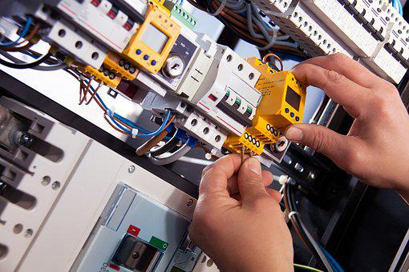

Electrical Engineering deals with the ideas and utilization of ideas of power, gadgets, and electromagnetism. Power, however not so old as far as the creation, has set up a good foundation for itself as one of the main types of energy because of its simplicity of creation and furthermore because of its irrelevant emission qualities. This has prepared for the beginning of a field of engineering, which is committed to the investigation of the very, that is, Electrical Engineering. Students who wish to concentrate on electrical engineering in Germany could have an outstanding experience, such a long way as the learning of the essentials is concerned.
This field of engineering is relevant as a significant occupation during the last half of the nineteenth century, post the commercialization of developments like the electric message, phone, electrical power, etc. Electrical Engineering has observed application in numerous current gadgets and developments, which have along these lines led to further division of the field according to the specialization, like control hardware, signal handling, media transmission, etc, bringing about the popularity of courses like masters in electrical engineering in Germany. One can fairly easily observe the amazingness of an electrical engineer through the variety of items around us today. They depend on the ideas of power and gadgets, from clothes washers to MP3 players, from TVs to space travel. Every part and item we handle in our regular routines is controlled by electrical engineering, making Masters in Electrical Engineering in Germany an enormous pursued stream.
With time, the different ideas of the field have been partitioned into specific streams to impart industry-driven information. Presently, one can learn inside and out with regards to the subject by applying to the absolute best schools in Germany and seeking advanced education as a master’s in electrical engineering in Germany. Students who concentrate on electrical engineering, In Germany can mix their intellectual capacities with that of the business, exclusively because of the presence of a solid assembling industry in the country. Germany, for a long, has bragged with regards to its unmatched information for designing items which range from kitchen items to vehicles! This is the place where a solid field like Electrical Engineering can be perceived by starting from scratch and the learned ideas can be applied in probably the best engineering organizations immediately. Fortunately, Germany is liberal as far as grants are given to the students, which makes concentrating on Masters in Electrical Engineering in Germany even more rewarding for worldwide students.